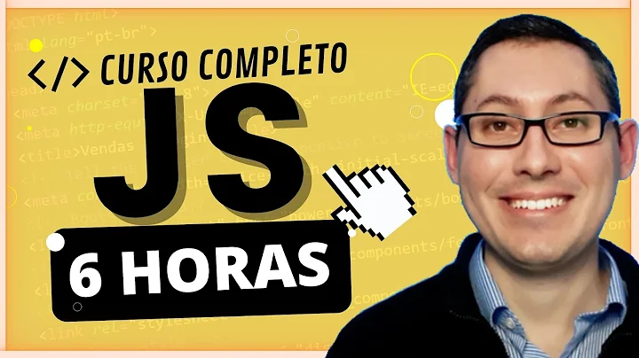
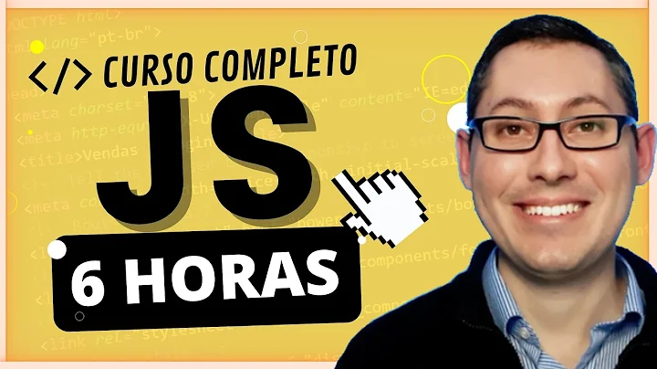

Sobremim
üëã Me chamo L√©o Vitor, tenho 15 anos, nasci em Riol√¢ndia SP, gosto de strogonoff. No in√≠cio da minha adolesc√™ncia sempre tive curiosidade em como criar sites, rob√¥s, e ent√£o foi a√≠ que um amigo me mostrou programa√ß√£o.
Ele se chamava Kiwi, grande colega, comecei programando bots no Discord, criei 4 robôs incriveis de economia, buscando se divertir, mas logo em 2022, resolvi me aprofundar em outros campos, e logo, comecei a conhecer a área de sites.
E hoje, to aqui, feliz, trabalhando localmente como programador de sites, para ajudar minha familia, estudei e tive 2 anos de experiência em criar sites. No momento, buscando prestar serviços de criação de sites para estabelecimentos. Sendo meu trabalho representado com o nome de Zyers Studios.
Idiomas:

Português
Nativo

Inglês
Básico
 
